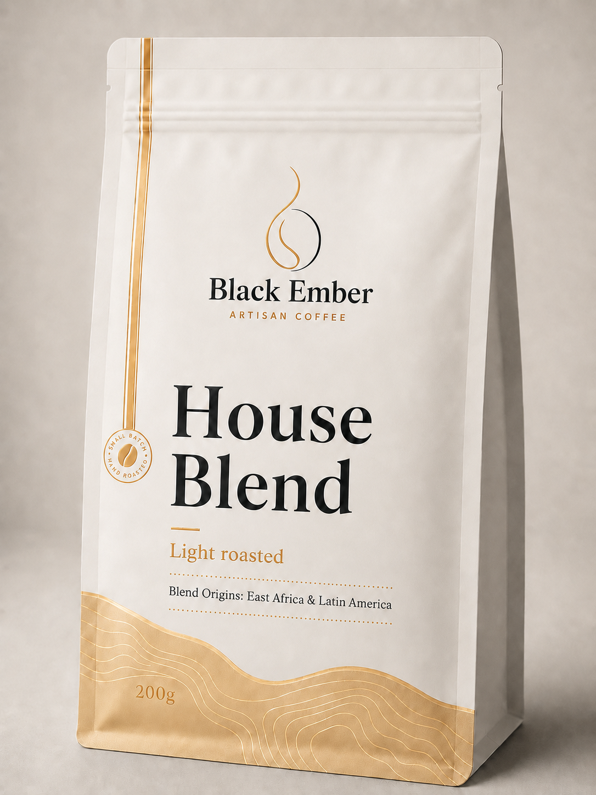

Intensity
Delicate, 2 / 5
A lighter body with vivid aromatics, refreshing acidity, and a crisp finish rather than roasted heaviness.

Bright & Delicate
A fragrant, clarity-led roast with lively fruit, floral aromatics, and a tea-like finish that rewards slower sipping.
SGD19.90
Back to ProductsIntensity
A lighter body with vivid aromatics, refreshing acidity, and a crisp finish rather than roasted heaviness.
Best For
Best for black-coffee drinkers, pour-over fans, and anyone who enjoys discovering fruit and floral notes as the cup changes temperature.
Tasting Notes
Orange zest, honey, jasmine, and a soft berry sweetness. Let the brew cool slightly for the most expressive aroma.
Brew Guide
Light roasts generally benefit from hotter water and a little more water per gram of coffee. Even saturation and a patient pour help reveal sweetness.
Bloom with 45ml for 40 seconds, then use three controlled pours. If the cup tastes sharp, grind finer before lowering the water temperature.
Choose naturally sweet dairy or oat milk and keep the texture light. For more coffee clarity, reduce milk to 90ml.
Recipes are starting points informed by the SCA Golden Cup brew ratio, SCA espresso research, and Breville's guidance that a latte commonly uses about a 3:1 milk-to-espresso ratio. Adjust grind and liquid to taste.